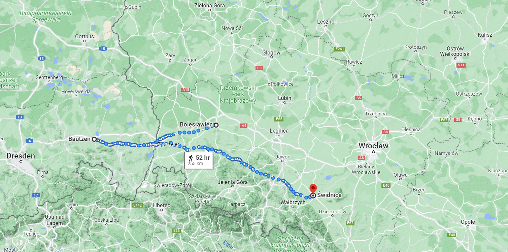

이제는 어디로? - 연합군의 고민
게시: 2023-06-05T06:30:36+09:00
뒤록을 잃은 나폴레옹이 충격과 슬픔으로 잠시 주춤한 사이, 연합군 사령관 비트겐슈타인은 후퇴를 계속 했습니다. 1차 후퇴 집결지였던 라이쉔바흐(Reichenbach)는 방어에 적합한 지형이었지만 비트겐슈타인은 거기 멈춰서서 나폴레옹과 다시 싸울 생각이 전혀 없었습니다. 기본적으로는 비트겐슈타인 본인도 나폴레옹만큼이나 이제 어떻게 해야 할지 막막한 편이었습니다. 아무리 단 1문의 대포도 단 1기의 군기도 빼앗기지 않았다고 해도, 후퇴하는 연합군의 사기가 좋을 리는 없었습니다. 당시 연합군의 분위기를 잘 보여주는 일화가 있습니다. 바우첸 전투에서 패배가 확정되고 알렉산드르가 후퇴를 명한 뒤, 함께 있던 프로이센 국왕 프리드리히 빌헬름은 알렉산드르와 함께 말머리를 나란히 하고 후퇴길에 나섰습니다. 그 두 군주는 몇 시간을 아무 말도 없이 묵묵히 말을 타다가, 프리드리히 빌헬름이 먼저 침묵을 깼는데 그 내용은 과히 호의적인 것은 아니었습니다. "난 좀 다른 것을 기대했었소이다. 난 서쪽으로 말을 달리고 싶었는데, 우린 동쪽으로 가고 있소." 알렉산드르는 연합군의 부대들 중 어느 하나 패주한 것이 없고 아무 것도 잃은 것이 없으니 연합군은 다시 시작할 수 있으며 신의 가호가 따른다면 상황이 좋아질 거라고 프리드리히 빌헬름을 위로했습니다. 프리드리히 빌헬름은 그 말을 들은 뒤 '정말 우리의 상황이 좋아진다면 그건 오로지 신의 가호 덕분이라는 것을 만천하에 고백해야 할 것'이라고 말했습니다. 문맥만 보면 프로이센 왕은 불만이 가득할 뿐 상황이 나아질 거라는 희망이 전혀 없다고 말하고 있는 것으로 들리는데, 소문난 독실한 신앙인이었던 알렉산드르는 신의 은총 부분에만 집중했는지 프로이센 왕의 손을 꼭 붙잡으며 만족스러운 동의를 표했다고 합니다. 러시아 혐오증이 심했던 그나이제나우는 역시나 후퇴하는 와중에도 여기저기 편지를 써서 바우첸 전투의 패배가 러시아군, 특히 비트겐슈타인 때문이라고 비난하기 바빴습니다. 이건 다분히 방어적인 태도였습니다. 객관적으로 보면 무너진 전선은 좌익과 중앙의 러시아군이 아니라 우익의 프로이센군 담당 구역이었기 때문에, 여차하면 바우첸 패배의 책임을 프로이센군이 뒤집어 쓸 수도 있기 때문이었습니다. 나폴레옹과 네의 공격은 프로이센군에게 집중된 것이나 그에 따라 당연히 왔어야 하는 러시아군의 지원이 거의 없었기 때문에 패배한 것이 사실이었지만, 그 실질적 책임은 다름 아닌 절대 권력자 알렉산드르에게 있었습니다. 아무리 그나이제나우라고 해도 러시아 짜르에게 날선 비난을 퍼부을 수는 없는 일이었습니다. 그래서 그나이제나우의 비난은 그렇잖아도 억울한 신세였던 비트겐슈타인에게 사정없이 내리꽂혔습니다. 그나이제나우는 프로이센 총리 하르덴베르크에게 쓴 편지에서 '비트겐슈타인이 지휘권을 가지고 있는 이상 하는 짓거리는 후퇴 뿐이니 프로이센은 독자적인 생존 작전을 시작해야 한다'며 연합군에게 아무런 도움이 되지 않는 분열성 발언만 늘어놓았습니다. 남들이 뭐라고 하건 일단 총사령관인 비트겐슈타인은 연합군의 생존을 위해 어디로든 움직여야 했습니다. 물론 결정은 여전히 비트겐슈타인보다는 두 군주 및 그들을 따라다니는 고위 참모진들의 협의 하에 나왔습니다. 연합군이 당장 향할 곳은 둘 중 하나였습니다. 분츨라우(Bunzlau) 또는 슈바이트니츠(Schweidnitz)였습니다. 분츨라우는 프리드리히 빌헬름의 거점인 슐레지엔의 주도 브레슬라우(Breslau, 폴란드어로 브로츠워프 Wrocław)를 거쳐 칼리쉬(Kalisch)로 이어지는 전통적인 러시아군의 보급로상에 있었습니다. 슈바이트니츠는 분츨라우보다 더 남동쪽에 위치한 작은 도시로서, 실은 도시라기 보다는 큰 마을에 가까운, 그러니까 아무런 중요성을 가지지 않은 곳이었습니다.
(슈바이트니츠는 독일식 이름이고, 현재 이 도시는 폴란드 땅이 되어 슈비드니차(Świdnica)로 불립니다. 슐레지엔의 이 도시는 폴란드와 헝가리, 오스트리아와 프로이센 간의 치열한 영토 싸움에 따라 지배자가 계속 바뀌었고, 1806년 프로이센이 나폴레옹에게 박살이 난 뒤인 1807년 프랑스군이 이 도시까지 점령했었습니다. 지금도 인구 5만5천 정도의 작은 도시입니다. 사진 속에 보이는 건물은 시청 건물로서, 저 남쪽에 수데텐 산맥이 보입니다.) 그런데 왜 슈바이트니츠를 진지하게 후퇴 집결지로 정했던 것일까요? 이건 부어쉔(Wurschen) 계획 때문이었습니다. 부어쉔 계획이란 바우첸 전투 직전, 오스트리아의 특사인 스타디온 백작이 6월 1일까지는 오스트리아가 나폴레옹에게 선전포고를 하겠다고 연합군에게 통보함에 따라 러시아 측의 볼콘스키(Volksonky)와 톨(Toll), 그리고 프로이센 측의 크네제벡(Knesebeck)이 부어쉔에서 회동하고 협의하여 작성한 계획서였습니다. 그 내용은 한마디로 오스트리아로 하여금 나폴레옹의 측면을 치게 한다는 작전이었습니다. 당시 바우첸 전투 직전의 대치 상황에서는 나폴레옹의 남쪽 측면이 오스트리아 영토인 보헤미아에 노출되어 있었으므로, 혹시 바우첸 전투에서 나폴레옹이 승리하여 후퇴하는 연합군을 나폴레옹이 추격한다면 나폴레옹의 후방 보급선이 오스트리아에게 고스란히 노출되었습니다. 부어쉔 계획의 요체는 오스트리아가 바로 그런 지리적인 이점을 적극적으로 활용하는 것에 있었습니다.

(위 지도는 분츨라우에서 바우첸을 거쳐 슈바이트니츠로 가는 경로를 표시한 것입니다. 바우첸에서 슈바이트니츠까지는 약 160km 정도의 거리입니다. 주목하실 부분은 남쪽 보헤이마와 북쪽 작센-슐레지엔 사이에 천연 국경 역할을 하는 수데텐(Sudeten) 산맥입니다.) 나폴레옹이 연합군 궤멸을 위한 방책이 없어 막막했던 것처럼, 연합군도 나폴레옹을 무찌를 방법이 마땅치 않았습니다. 그런 상황에서 작센으로 전진했던 경로를 역으로 되밟아 분츨라우-블레슬라우-칼리쉬로 연달아 후퇴하는 것은 그나이제나우가 맹비난하던 것처럼 정말 대책없이 후퇴만 하는 모양새가 되었습니다. 그럴 경우 가뜩이나 불만이 많은 프로이센군은 러시아군과의 동맹에는 더 이상 희망이 없다고 보고 연합군에서 이탈하여 슐레지엔의 요새에서 농성을 하던가, 아니면 최악의 경우 나폴레옹에게 강화 조약을 맺자고 백기를 들 수도 있었습니다. 연합군에게 돌파구가 있다면 그건 바로 오스트리아의 참전이었습니다. 오스트리아가 참전할 경우 그 효과를 극대화하기 위해서, 또 오스트리아의 참전을 독려하기 위해서라도, 연합군은 나폴레옹을 오스트리아 국경 근처에 붙들어 두어야 했습니다. 그래서 보헤미아와 작센의 국경을 이루는 수데텐(Sudeten) 산맥 근처인 슈바이트니츠로 향할 것을 진지하게 고려했던 것입니다. 그러나 그 선택에도 중대한 위험이 뒤따랐습니다. 연합군 주력 부대들이 모두 그렇게 수데덴 산맥을 등진 남쪽 구석으로 내려간다면, 나폴레옹은 얼씨구나 하면서 쫓아와 브레슬라우와 칼리쉬로 연결되는 보급로를 끊고 연합군을 독안에 든 생쥐 꼴로 만들어 버릴 것이었습니다. 물론 그런 상황에서 오스트리아가 짜잔하고 나타나 참전을 선언한다면 일거에 전세를 역전시키고 옆구리를 노출한 나폴레옹에게 치명타를 먹일 수 있었습니다. 하지만 부어쉔 계획을 작성할 때 오스트리아가 알려준 바에 따르면 12만에 달할 오스트리아 야전군의 참전 준비 완료는 6월 말에나 가능했습니다. 아직 5월 23일도 되지 않았는데, 과연 6월 말까지 연합군이 슈바이트니츠에서 버틸 수 있을까에 대해서는 연합군 수뇌부도 자신이 없었습니다. 특히 슈바이트니츠는 주요 보급로에서 떨어진 궁벽한 곳으로서, 나폴레옹은 수데텐 산맥을 등진 연합군을 굳이 공격할 필요도 없이 포위만 하고 있어도 연합군을 천천히 굶겨죽일 수 있었습니다.
(수데텐 산맥 중 슈바이트니츠에서 가까운 곳에 있는 빙하 지형인 슈니에츠네 코투이(Śnieżne Kotły)입니다. 수데텐은 최고 높이가 1600m가 넘는 산들로 이루어진 산맥으로서 평원 지대에 익숙한 유럽인들에게는 꽤나 험하고 높은 산맥입니다.) 무엇보다, 오스트리아 야전군을 편성하고 있던 라데츠키 장군은 연합군의 부어쉔 계획에 대해, 만약 오스트리아가 선전포고를 할 경우 나폴레옹은 더 큰 위협이 될 오스트리아를 먼저 상대하기 위해 러시아-프로이센 연합군을 붙잡아 두도록 3~4개 군단만 남겨두고 나머지 병력을 총동원하여 먼저 오스트리아군을 칠 것이므로, 오스트리아로서는 공격보다는 수비에 집중하여 나폴레옹의 공격에 대응하겠다고 선언한 바 있었습니다. 연합군이 오스트리아만 믿고 슈바이트니츠로 갔는데 정작 오스트리아가 발을 뺸다면 그건 연합군의 궤멸을 뜻했습니다. 과연 이런 고민 끝에 연합군이 내린 결론은 어떤 것이었을까요? Source : The Life of Napoleon Bonaparte, by William Milligan Sloane Napoleon and the Struggle for Germany, by Leggiere, Michael V
https://en.wikipedia.org/wiki/%C5%9Awidnica https://en.wikipedia.org/wiki/Sudetes